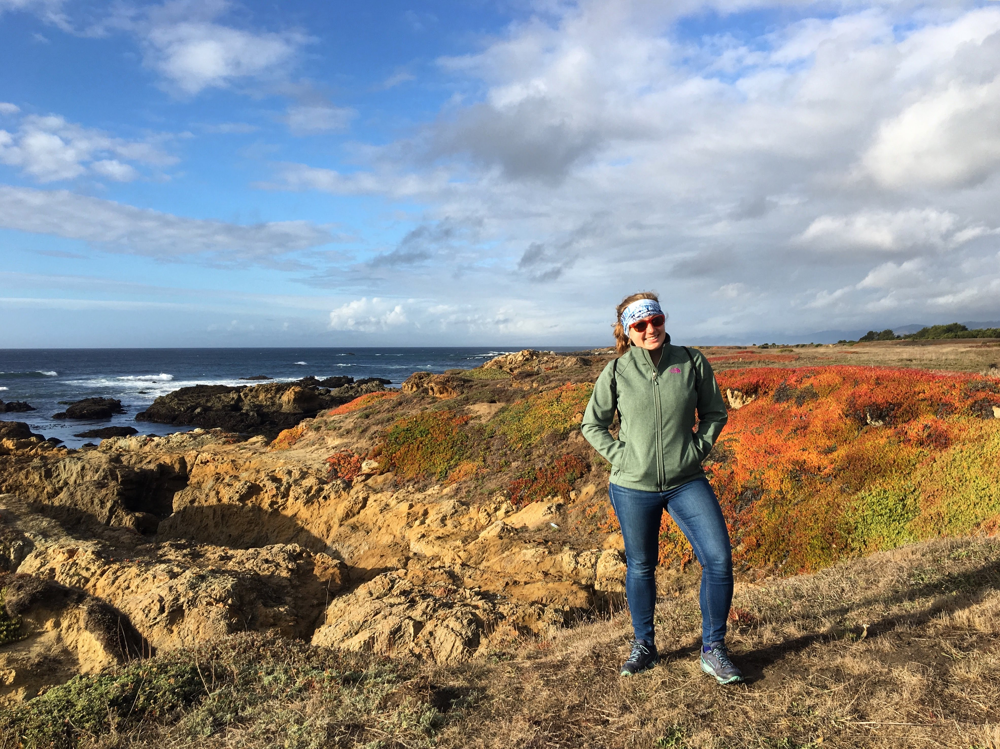

I’m a PhD candidate at UC Davis in the Wainwright Lab . I’m a fish enthusiast interested in the relationship between functional morphology and macroevolution. In particular, I study the role of major functional transitions in promoting morphological diversification, and the exceptional diversity of reef fishes. I integrate biomechanics, geometric morphometrics, and kinematic studies with phylogenetic comparative models of trait evolution. My past research at Friday Harbor Labs and Cornell University focused on shark tooth performance and the relationship between size and burial performance in flatfishes. You can contact me at kacorn 'at' ucdavis 'dot' edu.
Cranial mobility in
coral reef fishes
Studying evolution of cranial mobility across transitions to suction or biting in coral reef fishes.
Body shape
evolution

How do major functional transitions in feeding mode affect body shape evolution across all fishes? We've assembled the largest ever vertebrate body shape dataset to find out.
Scaling of burial
mechanics in flatfishes
How do burial mechanics change with increasing fish size? How does substrate size affect burial kinematics? We found that flatfish burial is limited by local grain size, likely by challenges of fluidizing relatively larger substrate particles.
Cutting ability of shark
teeth: the Jawzall
Dynamic testing of shark teeth provides a biomimetic method of testing repeated use and shark tooth morphology.
- © Untitled
- Design: HTML5 UP